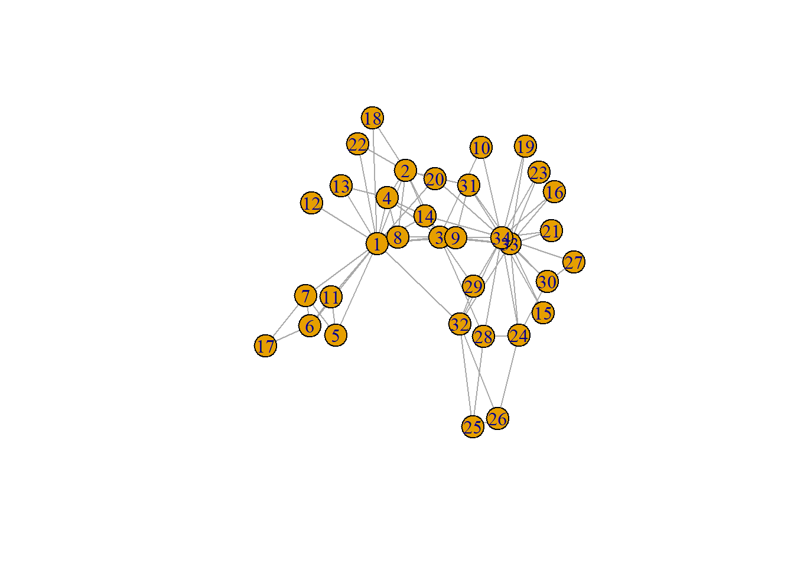
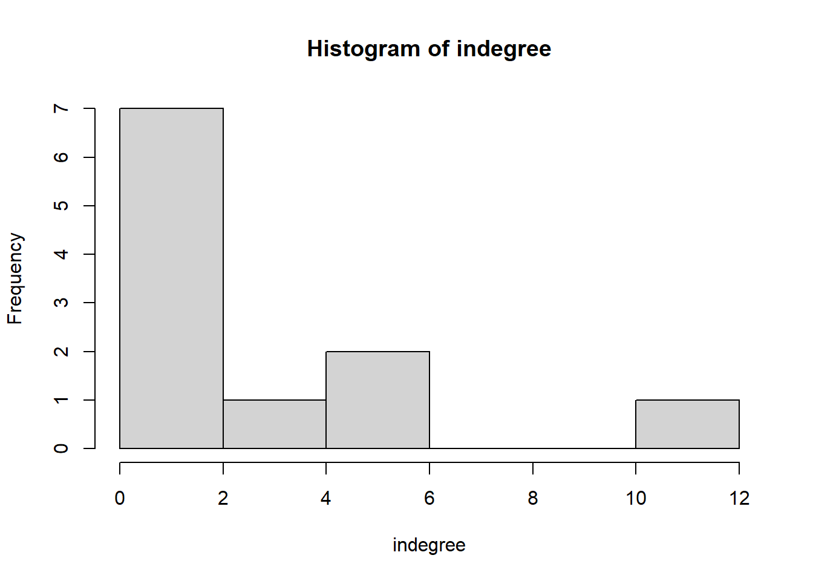
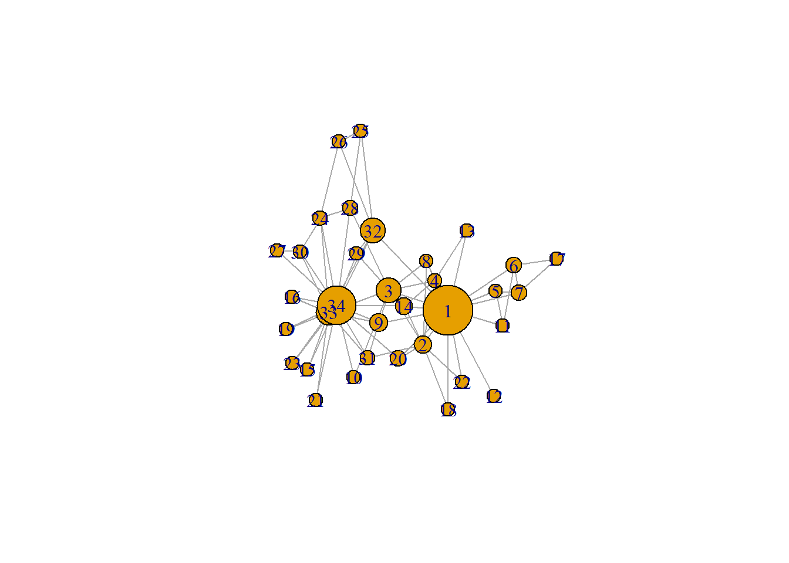

40_lab4
1 Week 4
1.1 Data visualisations
- See SNASS Chapter 9
1.1.1 Create an igraph object
require(igraph)
g <- make_graph("Zachary")
plot(g)
# My image is not the same as the one in the book
# So there's an algorithm underlying the calculation (random component)
# Centre of the figure determined based on popularity
# relations are undirected
# is that the default of igraph or because of the data?1.1.2 Inspect Adjacency Matrix
- G is an igraph object
gmat <- as_adjacency_matrix(g, type = "both", sparse = FALSE)
#gmat
isSymmetric(gmat) # undirected## [1] TRUE1.1.3 Descriptives
# SIZE
# number of nodes
vcount(g)## [1] 34# number of edges
ecount(g)## [1] 78# DEGREE
igraph::degree(g)## [1] 16 9 10 6 3 4 4 4 5 2 3 1 2 5 2 2 2 2 2 3 2 2 2 5 3 3 2 4 3 4 4 6
## [33] 12 17hist(table(degree(g)), xlab='indegree', main= 'Histogram of indegree')
# TRANSITIVITY
igraph::transitivity(g, type = c("localundirected"), isolates = c("NaN", "zero"))## [1] 0.1500000 0.3333333 0.2444444 0.6666667 0.6666667 0.5000000 0.5000000 1.0000000 0.5000000
## [10] 0.0000000 0.6666667 NaN 1.0000000 0.6000000 1.0000000 1.0000000 1.0000000 1.0000000
## [19] 1.0000000 0.3333333 1.0000000 1.0000000 1.0000000 0.4000000 0.3333333 0.3333333 1.0000000
## [28] 0.1666667 0.3333333 0.6666667 0.5000000 0.2000000 0.1969697 0.1102941# BETWEENNESS
igraph::betweenness(g, directed = FALSE) # shortest path length between two actors and how often is actor A included in the path?## [1] 231.0714286 28.4785714 75.8507937 6.2880952 0.3333333 15.8333333 15.8333333 0.0000000
## [9] 29.5293651 0.4476190 0.3333333 0.0000000 0.0000000 24.2158730 0.0000000 0.0000000
## [17] 0.0000000 0.0000000 0.0000000 17.1468254 0.0000000 0.0000000 0.0000000 9.3000000
## [25] 1.1666667 2.0277778 0.0000000 11.7920635 0.9476190 1.5428571 7.6095238 73.0095238
## [33] 76.6904762 160.5515873# standardiseren is handig als je meerdere netwerken met elkaar vergelijktEmphasize notes via colour or size (change ‘u-pallete’ depending on level of betweenness)
Or change the lay-out to highlight the notes with high levels of betweenness
library(pander)
igraph::dyad_census(g) ## Warning: `dyad_census()` requires a directed graph.## $mut
## [1] 78
##
## $asym
## [1] 0
##
## $null
## [1] 483igraph::triad_census(g)## Warning in triad_census_impl(graph = graph): Triad census called on an undirected graph. All connections will be treated as mutual.
## Source: misc/motifs.c:1157## [1] 3971 0 1575 0 0 0 0 0 0 0 393 0 0 0 0 45# I will use sna because it shows the names of the triads as well
pander(sna::triad.census(gmat))| 003 | 012 | 102 | 021D | 021U | 021C | 111D | 111U | 030T | 030C | 201 |
|---|---|---|---|---|---|---|---|---|---|---|
| 3971 | 0 | 1575 | 0 | 0 | 0 | 0 | 0 | 0 | 0 | 393 |
| 120D | 120U | 120C | 210 | 300 |
|---|---|---|---|---|
| 0 | 0 | 0 | 0 | 45 |
unloadNamespace("sna")
# Detach this package again, otherwise it will interfere with all kind of functions from igraph
# Transitivity at the netwerk level, number of closed triads of all triads that could be closed (all triad configurations consisting of two triads)
# Er zijn drie opties mogelijk voor het sluiten van 201 (AB-C, AC-B, BC-A)
# Als we 201 sluiten, dan waren er drie opties voorafgaand
# Er zijn 393 gesloten (3 gesloten)
# Definitie transitiviteit
# Hoeveel triades zijn er gesloten (45 * 3) /
# totaal gesloten netwerken OF hadden gesloten kunnen worden ((45 * 3) + 393)
igraph::transitivity(g, type = "global")## [1] 0.2556818sna::gtrans(gmat)## [1] 0.2556818triad_g <- data.frame(sna::triad.census(gmat))
transitivity_g <- (3 * triad_g$X300)/(triad_g$X201 + 3 * triad_g$X300)
transitivity_g## [1] 0.2556818# reciproce relaties tel je twee keer (*2)Transitiviteit
Lokaal: beredeneerd vanuit ego
Globaal: netwerkniveau
Om netwerken te vergelijken: zelfde aantal vrienden maar in netwerk A zijn er driehoekjes terwijl netwerk B minder hecht is, omdat er geen transitiviteit is
1.1.4 Netwerk visualisation
# changing V
V(g)$size = betweenness(g, normalized = T, directed = FALSE) * 60 + 10
# V = vertices (nodes)
# E = edges
# normaliseren
# * 60 + 10 (om tot een goede grootte te komen)
# * 60 (omdat betweenness score tussen 0 & 1)
# + 10 (omdat anders mensen zonder betweenness geen bolletje krijgen)
# after some trial and error
plot(g, mode = "undirected")
# vooraf grootte plotwindow definiëren
# volledig A4 size is een beginpunt
# en dan alle plaatjes maken
# wegschijven als .PNGset.seed(2345)
l <- layout_with_mds(g) # https://igraph.org/r/doc/layout_with_mds.html
plot(g, layout = l)
# Little further apart (manually)
l # let us take a look at the coordinates## [,1] [,2]
## [1,] 1.070931935 -0.172458113
## [2,] 0.732844464 0.754023309
## [3,] 0.100582299 0.397693607
## [4,] 0.708246655 0.570205545
## [5,] 1.816293170 -0.120778206
## [6,] 1.881329566 -0.135518854
## [7,] 1.881329566 -0.135518854
## [8,] 0.812606714 0.472619437
## [9,] -0.003769996 0.615513628
## [10,] -0.685680315 0.621065149
## [11,] 1.816293170 -0.120778206
## [12,] 1.621247830 -0.065820692
## [13,] 1.637845123 0.001789972
## [14,] 0.067317230 0.681421148
## [15,] -1.796316404 0.351417630
## [16,] -1.796316404 0.351417630
## [17,] 2.775260452 -0.124317652
## [18,] 1.616210024 0.182510197
## [19,] -1.796316404 0.351417630
## [20,] 0.048362858 0.566654982
## [21,] -1.796316404 0.351417630
## [22,] 1.616210024 0.182510197
## [23,] -1.796316404 0.351417630
## [24,] -1.891240567 -0.799574907
## [25,] -0.258345165 -2.006346563
## [26,] -0.360530857 -2.131642875
## [27,] -1.865177401 0.128596564
## [28,] -0.760226022 -0.529392331
## [29,] -0.710979936 -0.299960128
## [30,] -1.898426916 -0.149398746
## [31,] -0.568691923 0.804189411
## [32,] -0.048136037 -0.870967614
## [33,] -1.023681000 -0.035802363
## [34,] -1.146442924 -0.037605192l[1, 1] <- 4
l[34, 1] <- -3.5
plot(g, layout = l)
# plaatje met twee nodes aan de buitenkant (trekken beide)
# plaatje laat polarisatie zien
# als je zo'n figuur in een aritkel publiceert, altijd benoemen dat 1 en 34 handmatig aan de buitenkant zijn geplaatst om te illustreren wat er wordt gevonden (anders neight het naar datamanipulatie)
# Take-home message: plaatjes zijn niet neutraalplot(g, layout = l, margin = c(0, 0, 0, 0))
legend(x = -2, y = -1.5, c("Note: the position of nodes 1 and 34 have been set by Jochem Tolsma \n for visualisation purposes only and do not reflect network properties"),
bty = "n", cex = 0.8)
1.1.5 Twittersphere
load("./data/twitter_20190919.RData")
#str(twitter_20190919, 1)testm <- matrix(NA, nrow = 4, ncol = 4)
testm## [,1] [,2] [,3] [,4]
## [1,] NA NA NA NA
## [2,] NA NA NA NA
## [3,] NA NA NA NA
## [4,] NA NA NA NAclass(testm)## [1] "matrix" "array"testm[1,] <- c(0,1,NA,1)
testm[3,] <- c(0,1,NA,1)
testm[4,] <- c(0,1,NA,0)
testm## [,1] [,2] [,3] [,4]
## [1,] 0 1 NA 1
## [2,] NA NA NA NA
## [3,] 0 1 NA 1
## [4,] 0 1 NA 0is.na(testm)## [,1] [,2] [,3] [,4]
## [1,] FALSE FALSE TRUE FALSE
## [2,] TRUE TRUE TRUE TRUE
## [3,] FALSE FALSE TRUE FALSE
## [4,] FALSE FALSE TRUE FALSEclass(testm)## [1] "matrix" "array"mrow <- rowSums(is.na(testm)) == nrow(testm)
mcol <- colSums(is.na(testm)) == nrow(testm)
mrow & mcol ## [1] FALSE FALSE FALSE FALSEmtotal <- which(mrow & mcol)
# stel 2, dan weet je rij 2 en column 2 kunnen uit de data
which(mrow) # welke rij willen we vervangen## [1] 2which(mcol) # welke kolom willen we vervangen## [1] 3testm[which(mrow),] <- 0
testm[,which(mcol)] <- 0
testm[is.na(testm)] <- 0 # voor het plotten moeten we NA = 0 (niet voor Rsiena)
testm # dit is een botte bijl, voor plotten prima maar voor Rsiena minder## [,1] [,2] [,3] [,4]
## [1,] 0 1 0 1
## [2,] 0 0 0 0
## [3,] 0 1 0 1
## [4,] 0 1 0 01.2 Webscraping (Chapter 9 in SNASS)
- Grootschalig (2) Time-stamped data (3) Observeren (informatie niet in surveys)
Informatie van internet afhalen op geautomatiseerde wijze
Data-sharing
Met toestemming whatsapp data analyseren (netwerken construeren)
Bijvoorbeeld of telefoons in elkaars buurt zijn geweest
- Of de telefoon van A een bluetooth verzoek naar de telefoon van B heeft gestuurd
Objectieve data (geobserveerd) in plaats van surveydata (naar eigen zeggen)
Hoe sample je deze data? Wat is de populatie van berichten? Wanneer stop je?
Als je wilt onderzoeken wie naar de Efteling gaat
Via het onderzoeken van social-media posts
Dan mis je mensen die niet posten (selectiviteit)
Ethics
Mag je geautomatiseerd informatie van het internet halen? Websites hebben vaak robot-exclusion protocollen die geautomatiseerde dataverzameling verbieden
Mag het van de eigenaar? Mag het van de wet? Wat vind je zelf (belangrijkste)?
Kijk naar de beroepscode van sociologen & wetenschappelijke integriteit
Voor een paper, zorg dat je langs een ethische commissie gaat
1.2.1 Handmatig
1.2.2 Data vragen aan eigenaar
1.2.3 APIs (websites bedoeld om te scrapen)
1.2.4 Webscraping (AKA crawling technieken) (voorbeeld: NOS scrapen)
require(rvest)## Loading required package: rvest## Warning: package 'rvest' was built under R version 4.5.2##
## Attaching package: 'rvest'## The following object is masked from 'package:readr':
##
## guess_encodingrequire(xml2)## Loading required package: xml2## Warning: package 'xml2' was built under R version 4.5.2Ga naar NOS.nl en ga naar ‘Zoeken’
Zie de URL
q=jochem+tolsma (zoektermen)
& page=1 (aantal pagina’s)
Rechtermuisknop, inspecteren (open DevTools), Elements
Een webpagina heeft een hierarchische structuur
- Opgebouwd, subonderdelen met eigenschappen, namen, IDs
Kijk bij ‘body’
Bestaat uit een titel, bovenkant, main, en footer (onderpagina)
Meestal zit waar je geïntereseerd bent in main
Daarbinnen zoek je div en uiteindelijk je onderdeel
Je zoekt een soort table (UL) of list (LI) in UL
Zie een href, zoek de time-stap, zoek titel
library(rvest)
library(tidyverse)
url <- "https://nos.nl/zoeken?q=gendergelijkheid&page=1"
nos <- read_html(url)
nos## {html_document}
## <html data-theme="light" lang="nl">
## [1] <head>\n<meta http-equiv="Content-Type" content="text/html; charset=UTF-8">\n<meta charset="u ...
## [2] <body>\n<div id="__next">\n<nav data-tracking="nestType1=header" aria-label="Hoofdnavigatie" ...# bekijk functies in een package
# ?rvest (zie index)
# opslaan als XML noteset (met subnotes, want hierarchische webpagina)
lijst <- nos %>% html_elements("main") %>%
html_elements("ul") %>% # eerste ul is wat we nodig hebben
html_elements("li") # daarbinnen willen we alle list-elementen
# html_children() wat zit eronder?
lijst[1] %>% html_children## {xml_nodeset (1)}
## [1] <a data-tracking="eventType=navigation|eventName=open|elementId=2631322|elementType=article|e ...lijst[1] %>% html_children %>% html_children## {xml_nodeset (2)}
## [1] <div class="ListItem-style__ImageContainer-sc-1be7388f-1 cxsSmy"><span class="ResponsiveImage ...
## [2] <div class="ListItem-style__ContentContainer-sc-1be7388f-0 dEBlet">\n<p class="ListItem-style ...lijst[1] %>% html_children() %>% html_attrs() # kijk welke elementen in dit object## [[1]]
## data-tracking
## "eventType=navigation|eventName=open|elementId=2631322|elementType=article|elementPos=1"
## data-testid
## "listitem"
## class
## "ListItem-style__Anchor-sc-1be7388f-4 fBBvfR"
## href
## "/artikel/2631322-nederland-zakt-verder-weg-op-wereldwijde-ranglijst-voor-gendergelijkheid"artikel1 <- lijst[1] %>% html_children() %>% html_attr(name = "href") # zo pak je website
# href is de link
# we hebben het nu geretrieved, moeten het nog opslaan in een databestand
# weer een website van maken:
paste0("https://nos.nl", artikel1)## [1] "https://nos.nl/artikel/2631322-nederland-zakt-verder-weg-op-wereldwijde-ranglijst-voor-gendergelijkheid"time <- nos %>% html_elements("main") %>%
html_elements("ul") %>%
html_elements("li") %>%
html_elements("time") # om tijd informatie te retrieven
time[1] %>% html_attr(name = "datetime") # hier ## [1] "2026-09-17T00:33:46+0200"#?html_text()
# <> hier tussenin staat een html tag
# html_element() zoeken op basis van css of xpath
# ga naar web browser en website, klik op het juiste element
# bijvoorbeeld <div class> en dan kies je copy xPath of copy Full xpath
# /html/body/div/main/div[2]
titel <- nos |>
html_elements(".kYBrrl") |>
html_text()
titel## [1] "Nederland zakt verder weg op wereldwijde ranglijst voor gendergelijkheid"
## [2] "Steeds meer Amerikaanse goede doelen vluchten naar Nederland om Trump"
## [3] "Moeders gaan meer verdienen als de vader met verlof gaat, toont nieuw onderzoek"
## [4] "Sportraad richt zich op één advies voor 2027: focus op positie van vrouwen in de sport"
## [5] "Zevende dode vrouw gevonden bij Johannesburg, politie waarschuwt vrouwen"
## [6] "Negende dode vrouw gevonden in Zuid-Afrika in dezelfde regio bij Johannesburg"
## [7] "Italiaanse politica Emma Bonino overleden, voorvechter voor vrouwenrechten "
## [8] "Niet prinsessen maar geadopteerde mannen moeten Japans keizerlijk huis redden"
## [9] "Andrew Tate en broer aangehouden in Miami om verkrachting en geweld "
## [10] "Franse rechtspraak worstelt met zaken over partnergeweld: 'Nog lange weg te gaan'"
## [11] "Pride Amsterdam genomineerd voor erfgoedlijst Unesco"
## [12] "Kabinetsplannen om ouderschapsverlof te versoberen 'stap terug voor gendergelijkheid'"
## [13] "Verenigde Naties willen dat Nederland meer voor vrouwen doet"
## [14] "Kamermeerderheid inclusief coalitiepartijen: toch geen versobering ouderschapsverlof"
## [15] "Primeur in Formule 1: bocht bij GP Australië vernoemd naar vrouwelijke sleutelfiguren"
## [16] "Chinese vrouw nagelt vreemdgaande man aan schandpaal met 'excuusfilmpjes'"
## [17] "VS trekt zich terug uit tientallen VN-organisaties"
## [18] "Wekdienst 8/1: Kabinetsformatie gaat verder • Nieuwe zitting kunstroof Drents Museum"
## [19] "Kamer: discriminatieverbod gaat boven onderwijsvrijheid"
## [20] "CBS: aantal vermoorde vrouwen door (ex-)partner blijft gelijk"link <- nos |> html_elements("main") |>
html_elements("ul") |>
html_elements("li") |>
html_elements("a") |>
html_attr(name = "href")
link## [1] "/artikel/2631322-nederland-zakt-verder-weg-op-wereldwijde-ranglijst-voor-gendergelijkheid"
## [2] "/artikel/2621300-steeds-meer-amerikaanse-goede-doelen-vluchten-naar-nederland-om-trump"
## [3] "/artikel/2619817-moeders-gaan-meer-verdienen-als-de-vader-met-verlof-gaat-toont-nieuw-onderzoek"
## [4] "/artikel/2631310-sportraad-richt-zich-op-een-advies-voor-2027-focus-op-positie-van-vrouwen-in-de-sport"
## [5] "/artikel/2631186-zevende-dode-vrouw-gevonden-bij-johannesburg-politie-waarschuwt-vrouwen"
## [6] "/artikel/2631410-negende-dode-vrouw-gevonden-in-zuid-afrika-in-dezelfde-regio-bij-johannesburg"
## [7] "/artikel/2630574-italiaanse-politica-emma-bonino-overleden-voorvechter-voor-vrouwenrechten"
## [8] "/artikel/2623351-niet-prinsessen-maar-geadopteerde-mannen-moeten-japans-keizerlijk-huis-redden"
## [9] "/artikel/2623566-andrew-tate-en-broer-aangehouden-in-miami-om-verkrachting-en-geweld"
## [10] "/artikel/2621790-franse-rechtspraak-worstelt-met-zaken-over-partnergeweld-nog-lange-weg-te-gaan"
## [11] "/artikel/2612456-pride-amsterdam-genomineerd-voor-erfgoedlijst-unesco"
## [12] "/artikel/2605267-kabinetsplannen-om-ouderschapsverlof-te-versoberen-stap-terug-voor-gendergelijkheid"
## [13] "/artikel/2603837-verenigde-naties-willen-dat-nederland-meer-voor-vrouwen-doet"
## [14] "/artikel/2605931-kamermeerderheid-inclusief-coalitiepartijen-toch-geen-versobering-ouderschapsverlof"
## [15] "/artikel/2603766-primeur-in-formule-1-bocht-bij-gp-australie-vernoemd-naar-vrouwelijke-sleutelfiguren"
## [16] "/artikel/2599387-chinese-vrouw-nagelt-vreemdgaande-man-aan-schandpaal-met-excuusfilmpjes"
## [17] "/artikel/2597328-vs-trekt-zich-terug-uit-tientallen-vn-organisaties"
## [18] "/artikel/2597334-wekdienst-8-1-kabinetsformatie-gaat-verder-nieuwe-zitting-kunstroof-drents-museum"
## [19] "/artikel/2593857-kamer-discriminatieverbod-gaat-boven-onderwijsvrijheid"
## [20] "/artikel/2592317-cbs-aantal-vermoorde-vrouwen-door-ex-partner-blijft-gelijk"
## [21] "/zoeken?q=gendergelijkheid&page=0"
## [22] "/zoeken?q=gendergelijkheid&page=1"
## [23] "/zoeken?q=gendergelijkheid&page=2"
## [24] "/zoeken?q=gendergelijkheid&page=3"
## [25] "/zoeken?q=gendergelijkheid&page=4"
## [26] "/zoeken?q=gendergelijkheid&page=5"
## [27] "/zoeken?q=gendergelijkheid&page=6"
## [28] "/zoeken?q=gendergelijkheid&page=2"
## [29] "/zoeken?q=gendergelijkheid&page=1"
## [30] "/zoeken?q=gendergelijkheid&page=2"
## [31] "/zoeken?q=gendergelijkheid&page=3"
## [32] "/zoeken?q=gendergelijkheid&page=4"
## [33] "/zoeken?q=gendergelijkheid&page=5"
## [34] "/zoeken?q=gendergelijkheid&page=2"data <- nos |>
html_elements("time") |>
html_text()
data## [1] "donderdag, 00:33" "donderdag 2 juli, 11:37"
## [3] "maandag 22 juni, 20:07" "woensdag, 22:04"
## [5] "woensdag, 01:34" "donderdag, 18:32"
## [7] "vrijdag 11 september, 13:57" "vrijdag 17 juli, 14:00"
## [9] "zondag 19 juli, 03:47" "zondag 5 juli, 19:34"
## [11] "woensdag 29 april, 23:01" "zaterdag 7 maart 2026, 07:04"
## [13] "dinsdag 24 februari 2026, 12:46" "woensdag 11 maart 2026, 17:35"
## [15] "maandag 23 februari 2026, 20:01" "vrijdag 23 januari 2026, 16:11"
## [17] "donderdag 8 januari 2026, 01:23" "donderdag 8 januari 2026, 06:29"
## [19] "dinsdag 9 december 2025, 16:56" "vrijdag 28 november 2025, 08:41"length(titel)## [1] 20length(data)## [1] 20length(link)## [1] 34info <- tibble(titel, data, link[1:20])
information <- info |>
rename(Title = titel, Date = data, URL = `link[1:20]`) |>
mutate(URL = paste0("https://nos.nl", URL))
print(information[,"URL"])## # A tibble: 20 × 1
## URL
## <chr>
## 1 https://nos.nl/artikel/2631322-nederland-zakt-verder-weg-op-wereldwijde-ranglijst-voor-gendergel…
## 2 https://nos.nl/artikel/2621300-steeds-meer-amerikaanse-goede-doelen-vluchten-naar-nederland-om-t…
## 3 https://nos.nl/artikel/2619817-moeders-gaan-meer-verdienen-als-de-vader-met-verlof-gaat-toont-ni…
## 4 https://nos.nl/artikel/2631310-sportraad-richt-zich-op-een-advies-voor-2027-focus-op-positie-van…
## 5 https://nos.nl/artikel/2631186-zevende-dode-vrouw-gevonden-bij-johannesburg-politie-waarschuwt-v…
## 6 https://nos.nl/artikel/2631410-negende-dode-vrouw-gevonden-in-zuid-afrika-in-dezelfde-regio-bij-…
## 7 https://nos.nl/artikel/2630574-italiaanse-politica-emma-bonino-overleden-voorvechter-voor-vrouwe…
## 8 https://nos.nl/artikel/2623351-niet-prinsessen-maar-geadopteerde-mannen-moeten-japans-keizerlijk…
## 9 https://nos.nl/artikel/2623566-andrew-tate-en-broer-aangehouden-in-miami-om-verkrachting-en-gewe…
## 10 https://nos.nl/artikel/2621790-franse-rechtspraak-worstelt-met-zaken-over-partnergeweld-nog-lang…
## 11 https://nos.nl/artikel/2612456-pride-amsterdam-genomineerd-voor-erfgoedlijst-unesco
## 12 https://nos.nl/artikel/2605267-kabinetsplannen-om-ouderschapsverlof-te-versoberen-stap-terug-voo…
## 13 https://nos.nl/artikel/2603837-verenigde-naties-willen-dat-nederland-meer-voor-vrouwen-doet
## 14 https://nos.nl/artikel/2605931-kamermeerderheid-inclusief-coalitiepartijen-toch-geen-versobering…
## 15 https://nos.nl/artikel/2603766-primeur-in-formule-1-bocht-bij-gp-australie-vernoemd-naar-vrouwel…
## 16 https://nos.nl/artikel/2599387-chinese-vrouw-nagelt-vreemdgaande-man-aan-schandpaal-met-excuusfi…
## 17 https://nos.nl/artikel/2597328-vs-trekt-zich-terug-uit-tientallen-vn-organisaties
## 18 https://nos.nl/artikel/2597334-wekdienst-8-1-kabinetsformatie-gaat-verder-nieuwe-zitting-kunstro…
## 19 https://nos.nl/artikel/2593857-kamer-discriminatieverbod-gaat-boven-onderwijsvrijheid
## 20 https://nos.nl/artikel/2592317-cbs-aantal-vermoorde-vrouwen-door-ex-partner-blijft-gelijkView(information)library(igraph)
?igraph()